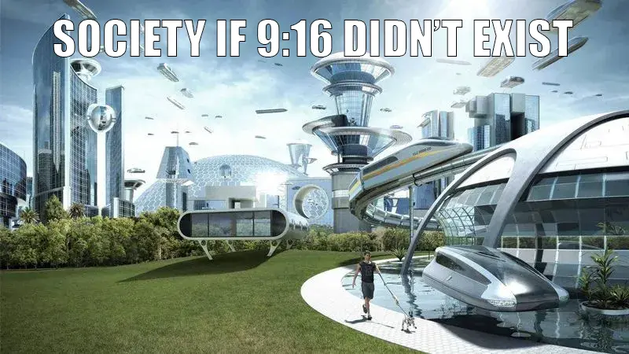
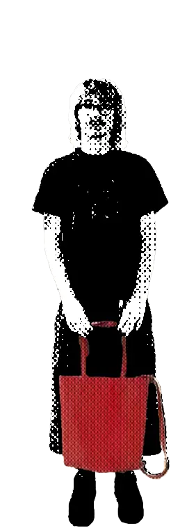
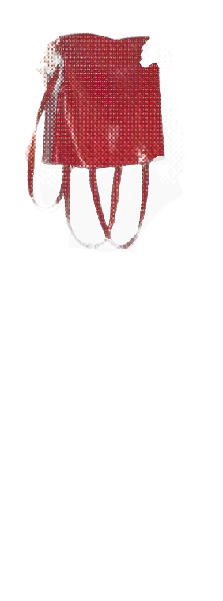

an responsive version of the portfolio will be devlopped in the future, for now im focussing at building the basics


Hello, my name is Mathéo Delessert
Welcome to my portfolio, all my work is in my bag!
index
/